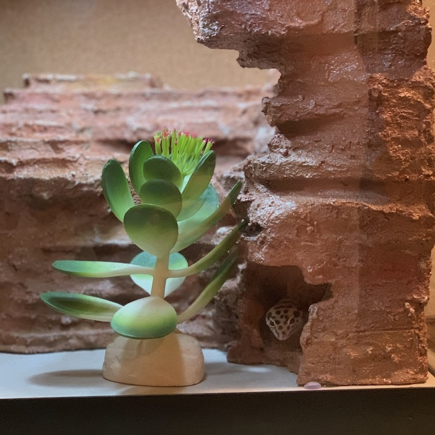

growing a cat
for her graduation madeleine received one whole kitten. his name is beauregard and he is a ball of energy. madeleine has grown him into a very handsome boy.

growing a leo
during her junior year madeleine bought a leopard gecko and named him indiana. this project is ongoing and she recently upgraded his tank to a 20 gallon tank instead of ten.

css grid art
upon learning css grid, madeleine created a replication of composition with red blue and yellow by piet mondrian. she sent a photo to her father and he applauded her hard work.